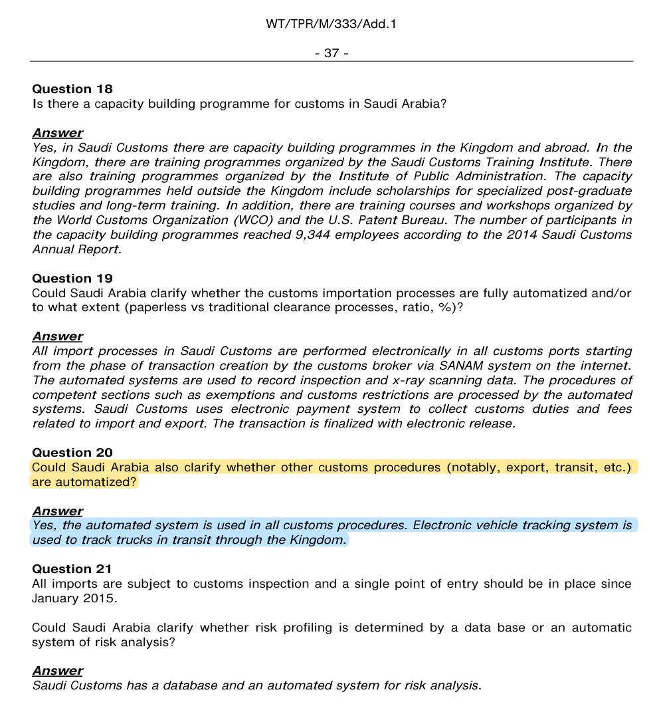
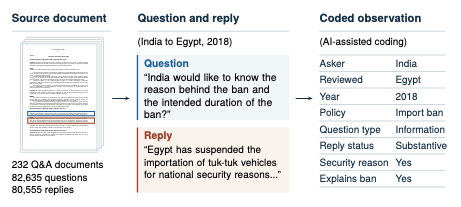
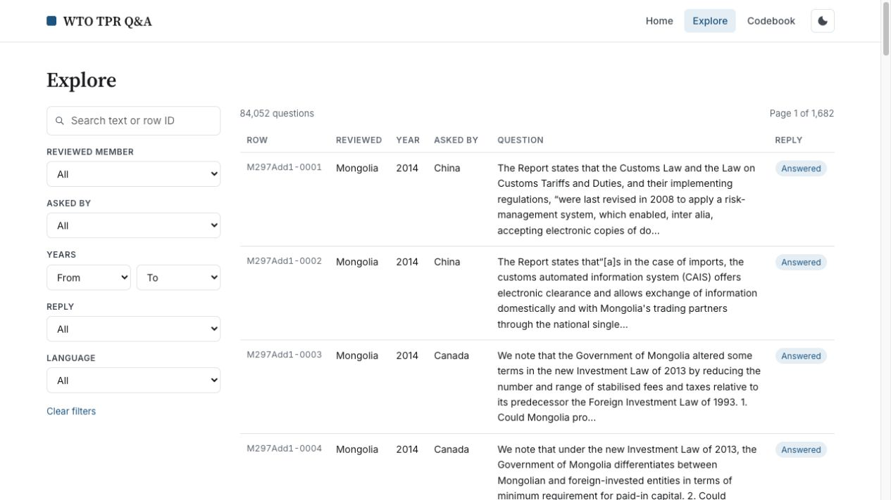

World Trade Organization (WTO) Trade Policy Review Q&A Forthcoming This dataset compiles written questions and replies that World Trade Organization (WTO) members exchanged during Trade Policy Reviews between 2012 and 2025.  Previous Next  